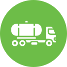

Sewage Tank Clearing & Cleaning
The service partners will use vacuum pumps and the vehicle-mounted tank to clear the septic tank. The vacuum pumps will suck the sludge and fill the vehicle-mounted tank. This sludge will be later taken away for prompt and proper disposal. Our service partners will clean the septic tank internally. The walls of the septic tank will be scraped and cleaned to make it sludge-free. The residue would be pumped out and treated with cleaning agents.
